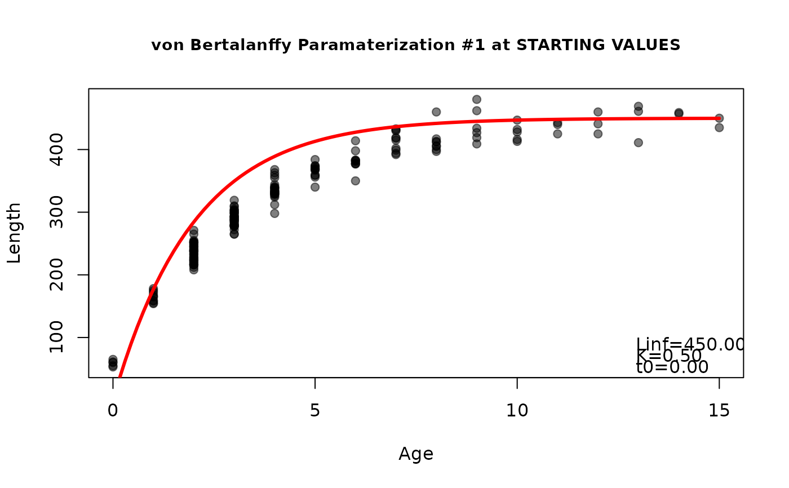

Find reasonable starting values for common fish growth functions.
Source:R/findGrowthStarts.R
findGrowthStarts.RdFinds reasonable starting values for the parameters in a specific parameterization of common growth functions (von Bertalanffy, Gompertz, logistic, Richards, Schnute, and Schnute-Richards).
Usage
findGrowthStarts(
formula,
data,
type = c("von Bertalanffy", "Gompertz", "logistic", "Richards", "Schnute",
"Schnute-Richards"),
param = 1,
pname = NULL,
case = NULL,
constvals = NULL,
fixed = NULL,
plot = FALSE
)Arguments
- formula
A formula of the form
length~agefor length-at-age models ordeltaL~deltat+lengthMfor tag-recapture models.lengthandagegenerically represent the observed length and annual age, anddeltaL,deltat, andlengthMgenerically represent the observed change in length, observed change in time, and observed length at marking.- data
A data frame that contains the variables in
formula.- type
A single string (i.e., one of “von Bertalanffy”, “Gompertz”, “logistic”, “Richards”, “Schnute”, “Schnute-Richards”) that indicates the type of growth function to show.
- param
A single numeric that indicates the specific parameterization of the growth function. Will be ignored if
pnameis non-NULL. See details.- pname
A single character that indicates the specific parameterization of the growth function. If
NULLthenparamwill be used. See details.- case
A numeric that indicates the specific case of the Schnute function to use.
- constvals
A NAMED numeric vector of constant values (either lengths or ages) to be used in some of the von Bertalanffy parameterizations. See details.
- fixed
A NAMED numeric vector that contains user-defined (i.e., fixed rather than automatically generated) starting values for one or more parameters. See details.
- plot
A logical that indicates whether a plot of the data with the superimposed model fit at the starting values should be created. This plot is for diagnostic purposes and, thus, cannot be modified in this function.
Value
A named vector that contains reasonable starting values. Note that the parameters will be listed with the same names in the same order as listed in makeGrowthFun.
Details
This function attempts to find reasonable starting values for a variety of parameterizations of common functions used to model fish growth (von Bertalanffy, Gompertz, logistic, Richards, Schnute, and Schnute-Richards). The starting values tend to work well in nls and related non-linear modeling functions, but there is no guarantee that they are the ‘best’ starting values (especially if the model is not appropriate for the data). One should perform sensitivity analyses to determine the impact of different starting values on the final model results.
In some instances it may be beneficial to fix one or more of the starting values to a user-defined choice. This can be done with fixed as shown in the examples. Note that starting values for other parameters that depend on the value of the fixed parameter may also be affected. For example, a starting value for \(t_0\) in the "Typical" von Bertalanffy function depends on values of \(L_\infty\) and \(K\). Thus, if, for example, \(K\) is fixed by the user then the starting value for \(t_0\) will also be affected as it will used the fixed rather than the automatically derived value for \(K\).
It is good practice for two reasons to use plot=TRUE to superimpose the growth function evaluated at the starting values over a scatterplot of the observed lengths versus ages. First, this will give the user a feel for how well the growth function fits the data given the starting values. If the "model line" does not represent the data well then the starting values are likely poor and the non-linear model may not converge. Second, the user may iteratively supply values for the parameters in fixed with plot=TRUE to "guess" at useful starting values. This is demonstrated in the examples.
See this article for complete examples of "fitting" growth models with FSA.
Note
Derivation of the starting values is detailed in this article. Further note that starting values have not yet been coded for every parameterization of the growth functions available in FSA. In those instances, you will need to derive starting values by other means.
See also
See makeGrowthFun to make functions that use these starting values and showGrowthFun to display the equations used in FSA. See nlsTracePlot for help troubleshooting nonlinear models that don't converge.
Author
Derek H. Ogle, DerekOgle51@gmail.com
Examples
# These examples use the hypothetical length-at-age (annual) data in GrowthData1
#===== Example starting values for 1st parameterization of each type
( svonb1 <- findGrowthStarts(tlV~age,data=GrowthData1,type="von Bertalanffy") )
#> Linf K t0
#> 454.4806075 0.2974555 -0.4752262
( sgomp1 <- findGrowthStarts(tlG~age,data=GrowthData1,type="Gompertz") )
#> Linf gi a1
#> 445.7926893 0.3107456 0.9170412
( slogi1 <- findGrowthStarts(tlL~age,data=GrowthData1,type="logistic") )
#> Linf gninf ti
#> 451.2034843 0.4848177 3.0240009
( srich1 <- findGrowthStarts(tlR~age,data=GrowthData1,type="Richards") )
#> Linf k ti b
#> 454.2638424 0.5155442 3.2033892 -0.4473415
#====== Example starting values at other parameterizations
( svonb4 <- findGrowthStarts(tlV~age,data=GrowthData1,type="von Bertalanffy",param=4) )
#> Linf L0 omega
#> 454.48061 59.91059 135.18775
( sgomp2 <- findGrowthStarts(tlG~age,data=GrowthData1,type="Gompertz",param=2) )
#> Linf gi ti
#> 445.7926893 0.3107456 2.9511001
( slogi3 <- findGrowthStarts(tlL~age,data=GrowthData1,type="logistic",param=3) )
#> Linf gninf L0
#> 451.2034843 0.4848177 84.6177000
( srich3 <- findGrowthStarts(tlR~age,data=GrowthData1,type="Richards",param=3) )
#> Linf k L0 b
#> 454.2638424 0.5155442 145.9443224 -0.4473415
#' #====== Example using pname instead of param
( svonb4 <- findGrowthStarts(tlV~age,data=GrowthData1,type="von Bertalanffy",pname="Mooij") )
#> Linf L0 omega
#> 454.48061 59.91059 135.18775
( sgomp2 <- findGrowthStarts(tlG~age,data=GrowthData1,type="Gompertz",pname="Ricker1") )
#> Linf gi ti
#> 445.7926893 0.3107456 2.9511001
( slogi3 <- findGrowthStarts(tlL~age,data=GrowthData1,type="logistic",pname="Campana-Jones2") )
#> Linf gninf a
#> 451.2034843 0.4848177 1.4660891
( srich3 <- findGrowthStarts(tlR~age,data=GrowthData1,type="Richards",pname="Tjorve7") )
#> Linf k L0 b
#> 454.2638424 0.5155442 145.9443224 -0.4473415
#====== Some vonB parameterizations require constant values in constvals=
( svonb8 <- findGrowthStarts(tlV~age,data=GrowthData1,type="von Bertalanffy",
pname="Francis",constvals=c(t1=2,t3=11)) )
#> L1 L2 L3
#> 236.8312 397.4073 439.5145
#====== Demonstrate use of fixed= with 2nd (Original) param of von B as e.g.
( svonb2 <- findGrowthStarts(tlV~age,data=GrowthData1,param=2) )
#> Linf K L0
#> 454.4806075 0.2974555 59.9105925
( svonb2 <- findGrowthStarts(tlV~age,data=GrowthData1,param=2,fixed=c(Linf=500)) )
#> Linf K L0
#> 500.0000000 0.2974555 59.9105925
( svonb2 <- findGrowthStarts(tlV~age,data=GrowthData1,param=2,fixed=c(Linf=500,K=0.25)) )
#> Linf K L0
#> 500.00000 0.25000 59.91059
#===== Starting values with diagnostic plot
( sgomp3 <- findGrowthStarts(tlG~age,data=GrowthData1,type="Gompertz",param=3,plot=TRUE) )
#> L0 gi a2
#> 36.5242722 0.3107456 2.5018770
#===== Iteratively guess at starting values (stop when the model seems to "fit")
findGrowthStarts(tlV~age,data=GrowthData1,plot=TRUE,fixed=c(Linf=600,K=0.5,t0=0)) #att 1
#> Linf K t0
#> 600.0 0.5 0.0
findGrowthStarts(tlV~age,data=GrowthData1,plot=TRUE,fixed=c(Linf=450,K=0.5,t0=0)) #att 2

#> Linf K t0
#> 450.0 0.5 0.0
findGrowthStarts(tlV~age,data=GrowthData1,plot=TRUE,fixed=c(Linf=450,K=0.3,t0=0)) #att 3
#> Linf K t0
#> 450.0 0.3 0.0
findGrowthStarts(tlV~age,data=GrowthData1,plot=TRUE,fixed=c(Linf=450,K=0.3,t0=-0.5)) #looks OK, stop
#> Linf K t0
#> 450.0 0.3 -0.5
#===== Plot at starting and final values
#----- creating growth function corresponding to first param of von B
vonb1 <- makeGrowthFun(type="von Bertalanffy")
#----- plot data
plot(tlV~age,data=GrowthData1,pch=19,col=col2rgbt("black",0.2))
#----- plot von b growth function at starting values (svonb1 from above)
curve(vonb1(x,Linf=svonb1),col="blue",lwd=5,add=TRUE)
#----- fit growth function to data
rvonb1 <- nls(tlV~vonb1(age,Linf,K,t0),data=GrowthData1,start=svonb1)
cvonb1 <- coef(rvonb1)
#----- plot growth function at final values ... starting values were very good!
curve(vonb1(x,Linf=cvonb1),col="red",lwd=2,add=TRUE)
#===== Example for tag-recapture data (in GrowthData3)
#----- Fabens model
findGrowthStarts(deltaL~deltat+tlM,data=GrowthData3,pname="Fabens")
#> Linf K
#> 455.3123432 0.2586226
#----- Francis model
findGrowthStarts(deltaL~deltat+tlM,data=GrowthData3,pname="Francis2",
constvals=c(L1=150,L2=400))
#> g1 g2
#> 69.57631 12.60489